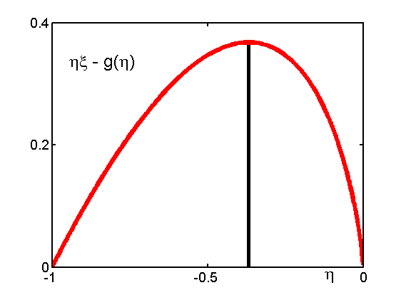

Optimization illustration
function optMaxLambdaVal()
f = @(x)x-(x-x.*log(-x));
domain = -1:0.0005:0;
figure; hold on;
m = -1/exp(1);
plot([m,m],[0,f(m)],'-k','LineWidth',4);
plot(domain,f(domain),'-r','LineWidth',5);
axis([-1 0 0 0.4]);
set(gca,'XTick',[-1 -0.5 0],'YTick',[0 0.2 0.4],'box','on',...
'LineWidth',2,'FontSize',14);
pdfcrop;
annotation(gcf,'textbox',[0.7983 0.02415 0.05935 0.1111],...
'String',{'\eta'},...
'FontSize',18,...
'LineStyle','none');
annotation(gcf,'textbox',[0.1611 0.7415 0.2 0.1014],...
'String',{'\eta\xi - g(\eta)'},...
'FontSize',18,...
'LineStyle','none');
printPmtkFigure optMaxLambdaVal;
end
